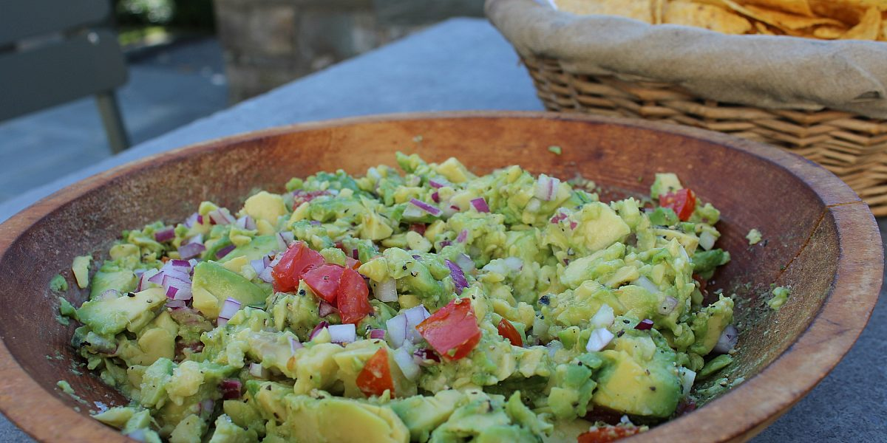

Guacamole Recipe

Description
This guacamole recipe from Barefoot Contessa is a perfect blend of creamy avocado with fresh ingredients like tomatoes, garlic, and onions. It's a crowd-pleaser at any party or a delicious snack for yourself. The balance of flavors is what makes this guacamole stand out—it's simple yet incredibly flavorful.
With just the right amount of lime juice and a pinch of salt, this recipe ensures the classic guacamole taste that pairs perfectly with tortilla chips, tacos, or even grilled meats. It's quick to prepare and always a hit at gatherings.
Ingredients
- 4 ripe Haas avocados
- 3 tablespoons freshly squeezed lemon juice (1 lemon)
- 8 dashes Tabasco sauce
- 1/2 cup small-diced red onion (1 small onion)
- 1 large garlic clove, minced
- 1 teaspoon kosher salt
- 1 teaspoon freshly ground black pepper
- 1 medium tomato, seeded, and small-diced
Steps
- Cut the avocados in half, remove the pits, and scoop the flesh out into a large bowl.
- Immediately add the lemon juice, Tabasco, onion, garlic, salt, and pepper, and toss well.
- Using a sharp knife, slice through the avocados in the bowl until they are finely diced.
- Add the tomatoes. Mix well and taste for seasonings.
- Serve at room temperature with tortilla chips.